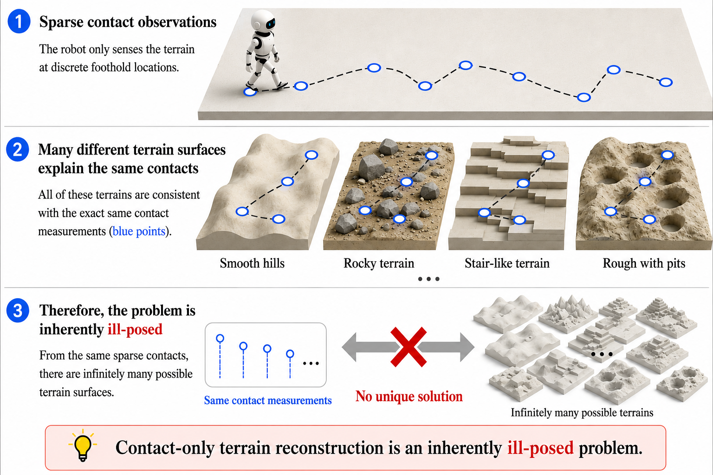
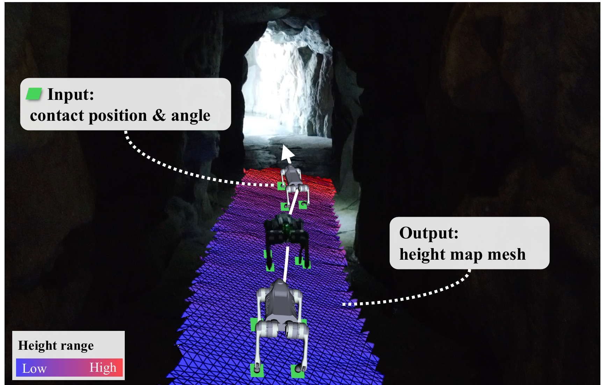
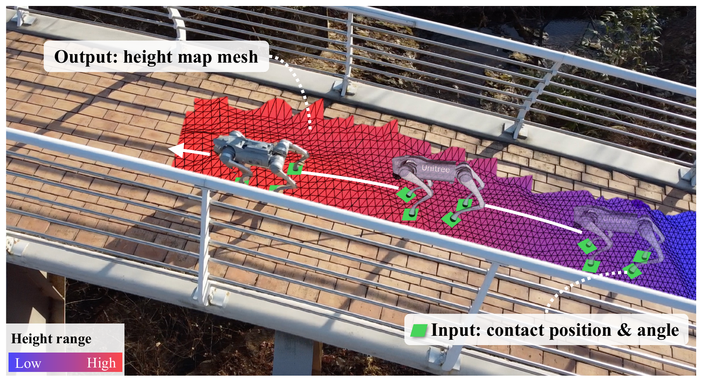
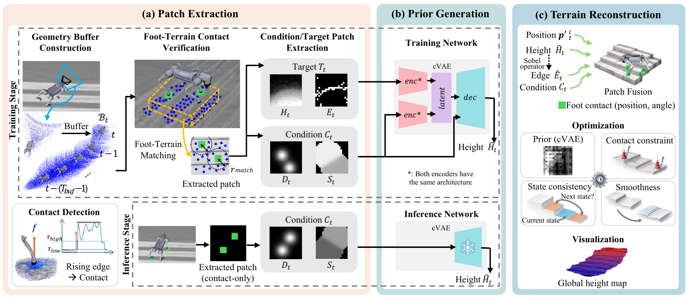
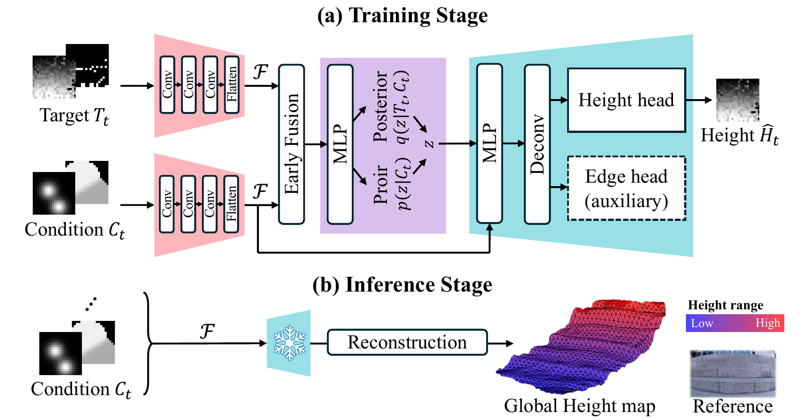

FootRecon: Quadrupedal Terrain Reconstruction from Sparse Foot Contacts
Submission for Robotics and Automation Letters, 2026
Abstract
Reliable terrain maps are essential for spatial reasoning and navigation in unstructured environments, but camera- and LiDAR-based mapping can become incomplete in harsh outdoor conditions. Foot-terrain contacts provide complementary geometric measurements at physically visited locations, remaining available when exteroceptive observations are unreliable. Because these contacts only sparsely sample the terrain, reconstructing the unobserved geometry between them is necessary to obtain a spatially coherent map. This problem is inherently under-constrained, as multiple terrain geometries can satisfy the same sparse contact measurements.
We present FootRecon, a framework for proprioception-only terrain reconstruction from sparse foot-terrain contacts. FootRecon introduces a cVAE-based framework to learn a contact-conditioned latent terrain prior, inferring plausible geometry in unobserved regions between footholds. The reconstructed terrain preserves sharp, non-smooth geometric features while ensuring consistency with measured contacts within a global 2.5D height map. Experimental results across diverse outdoor terrains demonstrate robust and online reconstruction in challenging real-world conditions.
Motivation
Losing vision does not mean losing all information about the terrain. Even when exteroceptive observations are degraded, quadrupedal robots still physically interact with the ground through sparse foot contacts.


Hover over degraded scenes to reveal the complementary information available from physical interaction.

Why a conditional VAE?
Sparse foot contacts constrain the terrain only at visited locations, leaving many plausible surfaces between footholds. A contact-conditioned latent prior lets FootRecon infer realistic terrain hypotheses while remaining consistent with measured contacts.


Pipeline


Experiments